Geodesic Mesh Processing
This tour explores geodesic computations on 3D meshes.
Contents
Installing toolboxes and setting up the path.
You need to download the following files: signal toolbox, general toolbox, graph toolbox and wavelet_meshes toolbox.
You need to unzip these toolboxes in your working directory, so that you have toolbox_signal, toolbox_general, toolbox_graph and toolbox_wavelet_meshes in your directory.
For Scilab user: you must replace the Matlab comment '%' by its Scilab counterpart '//'.
Recommandation: You should create a text file named for instance numericaltour.sce (in Scilab) or numericaltour.m (in Matlab) to write all the Scilab/Matlab command you want to execute. Then, simply run exec('numericaltour.sce'); (in Scilab) or numericaltour; (in Matlab) to run the commands.
Execute this line only if you are using Matlab.
getd = @(p)path(p,path); % scilab users must *not* execute this
Then you can add the toolboxes to the path.
getd('toolbox_signal/'); getd('toolbox_general/'); getd('toolbox_graph/'); getd('toolbox_wavelet_meshes/');
Distance Computation on 3D Meshes
Using the fast marching on a triangulated surface, one can compute the distance from a set of input points. This function also returns the segmentation of the surface into geodesic Voronoi cells.
Load a 3D mesh.
name = 'elephant-50kv';
[vertex,faces] = read_mesh(name);
nvert = size(vertex,2);
Starting points for the distance computation.
nstart = 15; pstarts = floor(rand(nstart,1)*nvert)+1; options.start_points = pstarts;
No end point for the propagation.
clear options;
options.end_points = [];
Use a uniform, constant, metric for the propagation.
options.W = ones(nvert,1);
Compute the distance using Fast Marching.
options.nb_iter_max = Inf; [D,S,Q] = perform_fast_marching_mesh(vertex, faces, pstarts, options);
Display the distance on the 3D mesh.
clf; plot_fast_marching_mesh(vertex,faces, D, [], options);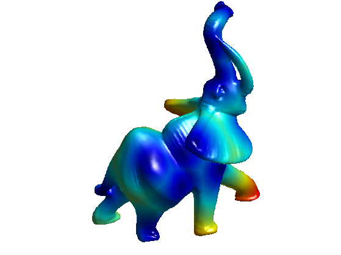
Extract precisely the voronoi regions, and display it.
[Qexact,DQ, voronoi_edges] = compute_voronoi_mesh(vertex, faces, pstarts, options); options.voronoi_edges = voronoi_edges; plot_fast_marching_mesh(vertex,faces, D, [], options);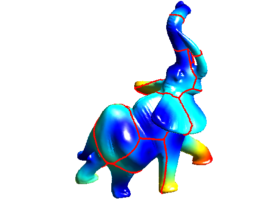
Exercice 1: (check the solution) Using options.nb_iter_max, display the progression of the propagation.
exo1;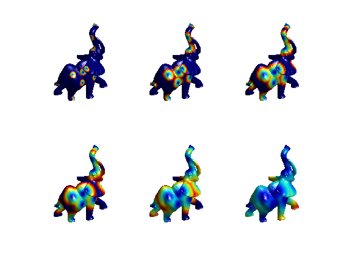
Geodesic Path Extraction
Geodesic path are extracted using gradient descent of the distance map.
Select random endding points, from which the geodesic curves start.
nend = 40; pend = floor(rand(nend,1)*nvert)+1;
Compute the vertices 1-ring.
vring = compute_vertex_ring(faces);
Exercice 2: (check the solution) For each point pend(k), compute a discrete geodesic path path such that path(1)=pend(k) and D(path(i+1))<D(path(i)) with [path(i), path(i+1)] being an edge of the mesh. This means that path(i+1) is an element of vring{path(i)}. Display the paths on the mesh.
exo2;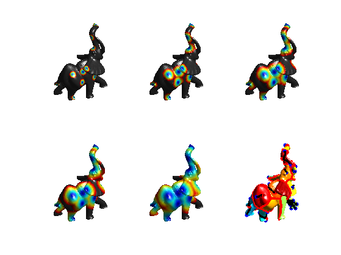
In order to extract a smooth path, one needs to use a gradient descent.
options.method = 'continuous';
paths = compute_geodesic_mesh(D, vertex, faces, pend, options);
Display the smooth paths.
plot_fast_marching_mesh(vertex,faces, Q, paths, options);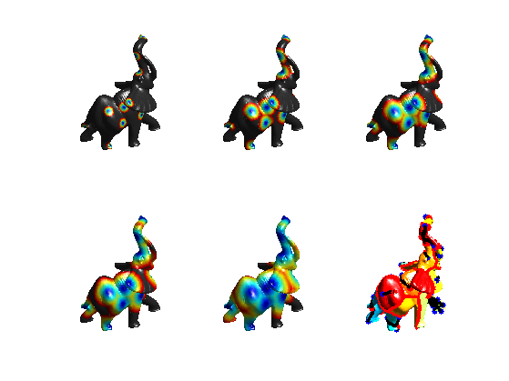
Curvature-based Speed Functions
In order to extract salient features of a surface, one can define a speed function that depends on some curvature measure of the surface.
Load a mesh with sharp features.
clear options; name = 'fandisk'; [vertex,faces] = read_mesh(name); options.name = name; nvert = size(vertex,2);
Display it.
clf; plot_mesh(vertex,faces, options);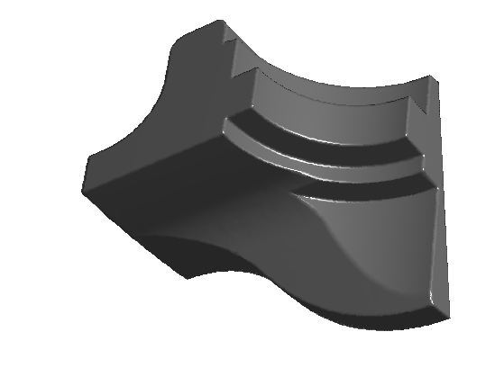
Compute the curvature.
options.verb = 0; [Umin,Umax,Cmin,Cmax] = compute_curvature(vertex,faces,options);
Compute some absolute measure of curvature.
C = abs(Cmin)+abs(Cmax); C = min(C,.1);
Display the curvature on the surface
options.face_vertex_color = rescale(C);
clf;
plot_mesh(vertex,faces,options);
colormap jet(256);
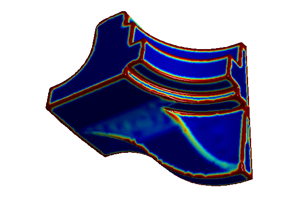 Compute a metric that depends on the curvature. Should be small in area that the geodesic should follow.
epsilon = .5; W = rescale(-min(C,0.1), .1,1);
Display the metric on the surface
options.face_vertex_color = rescale(W);
clf;
plot_mesh(vertex,faces,options);
colormap jet(256);

Starting points.
pstarts = [2564; 16103; 15840]; options.start_points = pstarts;
Compute the distance using Fast Marching.
options.W = W; options.nb_iter_max = Inf; [D,S,Q] = perform_fast_marching_mesh(vertex, faces, pstarts, options);
Display the distance on the 3D mesh.
options.colorfx = 'equalize';
clf;
plot_fast_marching_mesh(vertex,faces, D, [], options);
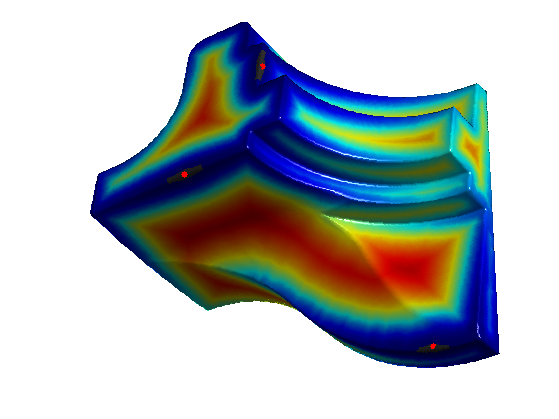 Exercice 3: (check the solution) Using options.nb_iter_max, display the progression of the propagation for constant W.
exo3;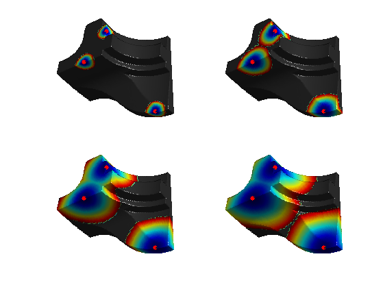
Exercice 4: (check the solution) Using options.nb_iter_max, display the progression of the propagation for a curvature based W.
exo4;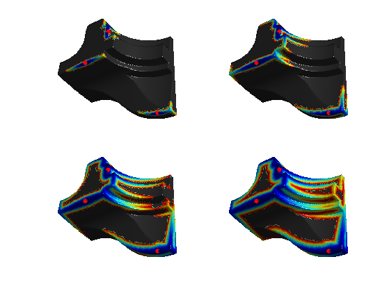
Exercice 5: (check the solution) Extract geodesics.
exo5;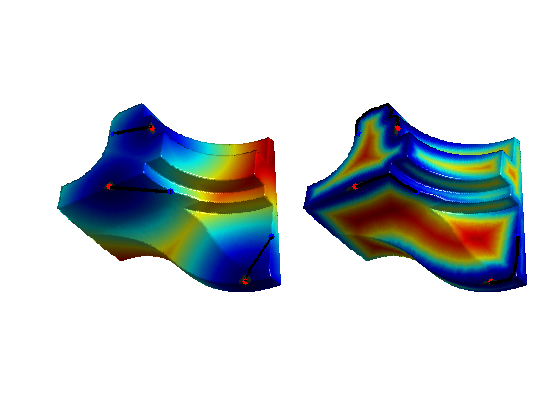
Texture-based Speed Functions
One can take into account a texture to design the speed function.
clear options; options.base_mesh = 'ico'; options.relaxation = 1; options.keep_subdivision = 0; [vertex,faces] = compute_semiregular_sphere(7,options); nvert = size(vertex,2);
Load a function on the mesh.
name = 'earth';
f = load_spherical_function(name, vertex, options);
options.name = name;
Starting points.
pstarts = [2844; 5777]; options.start_points = pstarts;
Display the function.
clf;
plot_fast_marching_mesh(vertex,faces, f, [], options);
colormap gray(256);
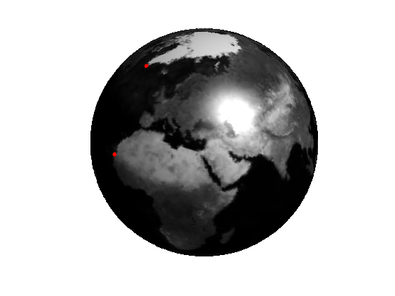 Load and display the gradient magnitude of the function.
g = load_spherical_function('earth-grad', vertex, options);
Display it.
clf;
plot_fast_marching_mesh(vertex,faces, g, [], options);
colormap gray(256);
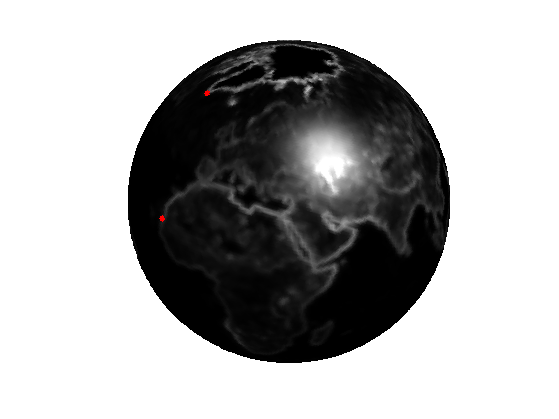 Design a metric.
W = rescale(-min(g,10),0.01,1);
Display it.
clf;
plot_fast_marching_mesh(vertex,faces, W, [], options);
colormap gray(256);
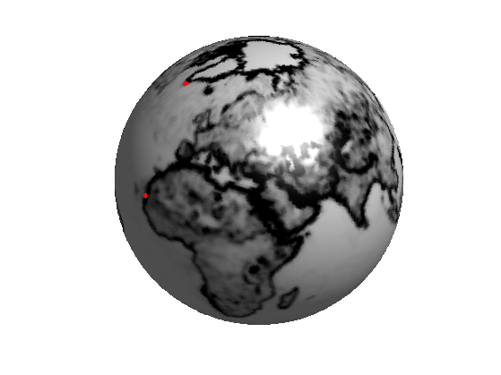 Exercice 6: (check the solution) Using options.nb_iter_max, display the progression of the propagation for a curvature based W.
exo6;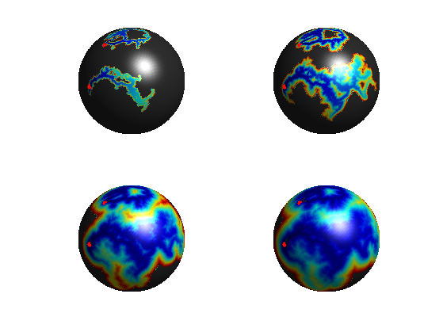
Exercice 7: (check the solution) Extract geodesics.
exo7;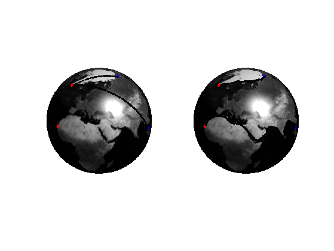